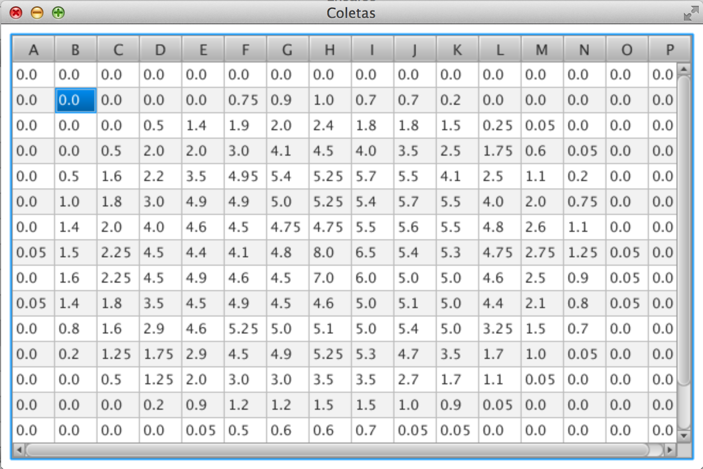

O que é e para que serve o cadastro de Coleta?
O cadastro de Coleta é a representação da malha de pluviometros do ensaio, é gerado através dos campos informados no cadastro de ensaio grid altura (metros), grid largura (metros) e espaçamentro entre pluviometros (metros) tem por finalidade armazenar o valor coletado nos pluviomentros, unidade de medida: milímetros;
Abaixo a tela de coleta gerada referente as seguinte dimensão: grid largura 24 metros, grid altura 24 metros, espaçametro 1.5 metros
Para iniciar a inserção escolha a célula, dois cliques ou enter, e informe o valor.